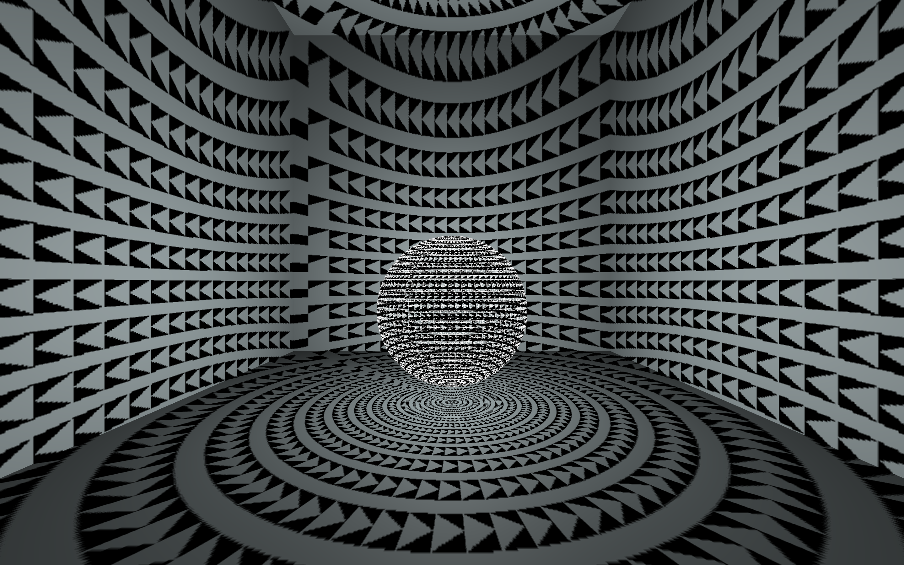

Shadow I
Abstract
This work is made of computationally fabricated enclosures, electronics and a control interface. Shadow I is part of a series of synthetically emotive kinetic sculptures inspired by stroboscopic flickering light phenomena that are commonly experienced with closed eyes. In stroboscopic light art what is perceived is the shadow that lands on the eyelids. Shadow I is made of Parametrized shadows, which are cast on the boundaries of a given physical space and move in different speeds according to the intensity of the sculpture's synthetic valence. Another major component of this sculpture is sound diffraction, where a rotating haptic speaker at the heart of the sculpture's body is propagating sounds generated by the sculpture's synthetic arousal. The illumination of the space with shadows, the distribution and generation of the sculpture's sound and the sculpture's movement follow a worldmaking framework that focuses on the chemical synthesis of artificial emotions acting as evolutionary prey and predators. Shadow I invites audiences to be immersed in a physical visual music environment, in which artificial emotions are spread in space and out of time leading to an otherwise perceived emotional life.